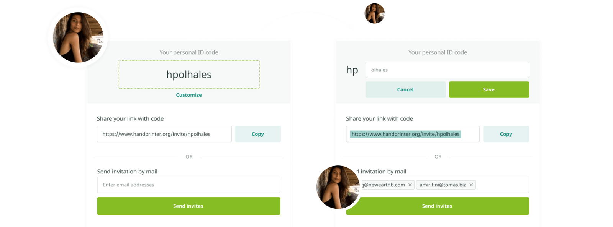
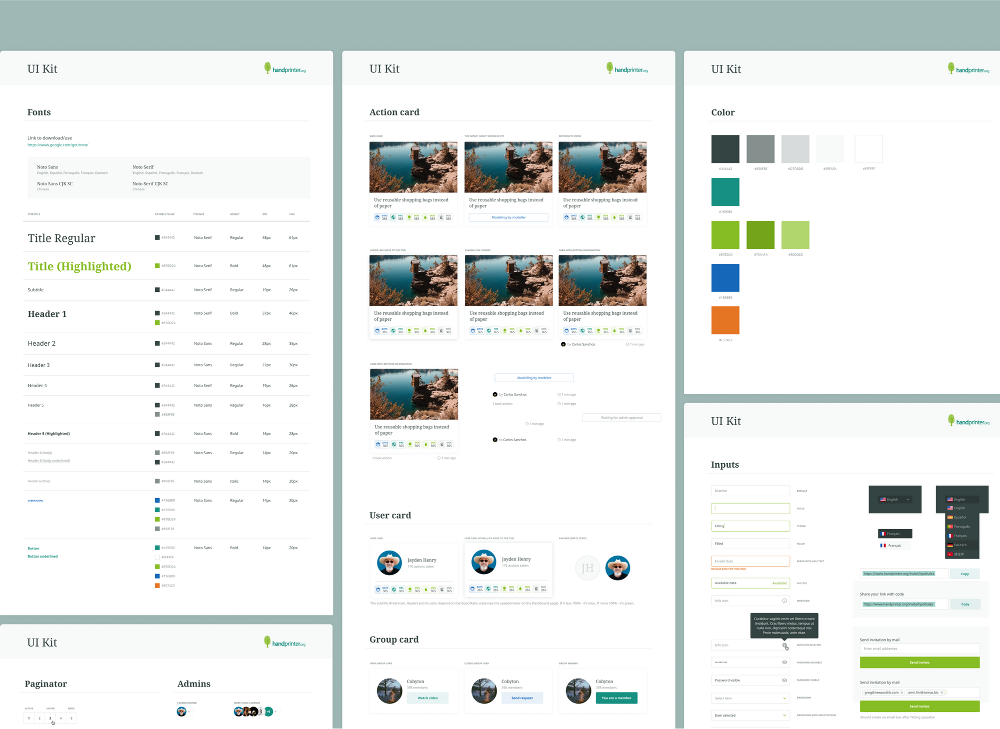
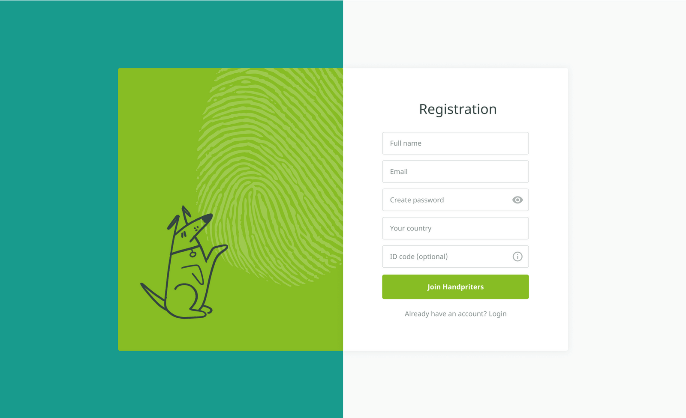
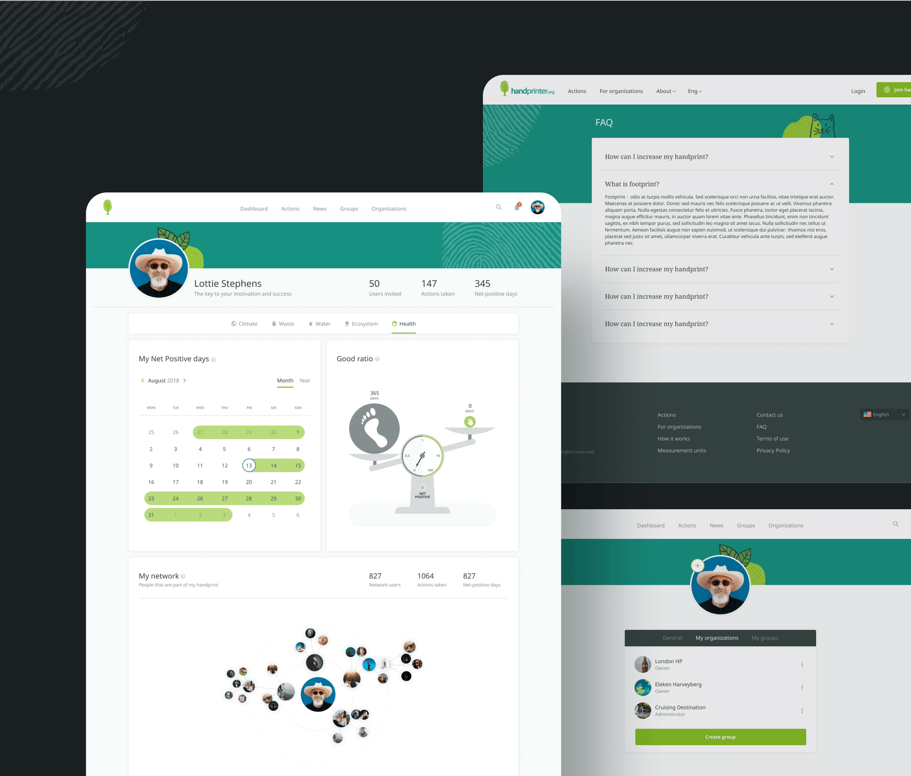
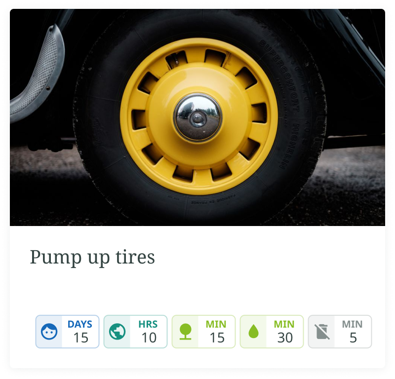
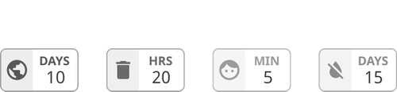
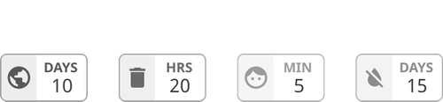
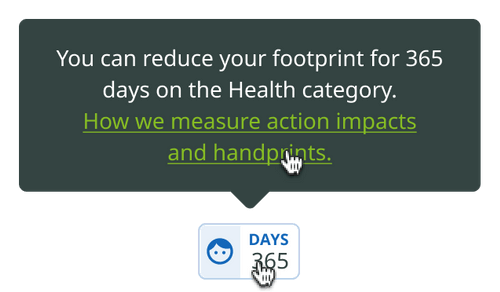

Started with research and site architecture. Wireframing and prototyping a lot.
Problem
The customer came with a request to make an easy system of relationships between users. If one person “inspires” another to take good action (online or offline), there must be a simple functional in the system to register this. It was necessary to come up with a simple and understandable move for each case.
Solution
We decided to assign each person their own ID code in the system. And they also gave him the opportunity to customize it to make it more memorable. Now, the user, let us name his Lucy, can verbally invite another user Jake to take positive action and report his ID code. And if Jake registers this action on the Handprinter, he is able to mention Lucy using Lucy's ID.
First visual versions and choosing of style. Then development of base UI Kit which will be expanded later.
Problem
In the future, the project is planned to be expanded to the whole world, and during the discussion with the client we found out that the site is going to be shown in 30+ languages, starting from English, German, Spanish, French, Dutch, Portuguese, and Chinese. For the designer, this meant that it was necessary to choose a font that has a sufficiently large number of localizations to make the site look equally good in any of the languages.
Solution
We decided to use the Noto family. It has a very large number of localizations and is available in the public domain on Google Fonts.
Applying style to all wireframes.
 Problem
We need the user to see and understand the possible impact of each action. All information must be understandable at first glance.
Solution
We design badges for easy page scanning.
There was a decision to put an icon in each category. "Face" icon for human health impact category, "planet" - for climate, "tree" - for the ecosystem, etc. According to the concept of service, all impacts are measured in time units. So we concluded to create a color hierarchy. The most powerful impacts (that count in days) are labeled by blue color, less powerful - “hours” - emerald green and tiny “minutes” - salad green. The negative impact, that is also possible, is gray and the icon is crossed-out. A combination of color, icons and text allows signs to be understandable for both - people with normal vision, and with any color blindness.
 

If something remains unclear for the user, there is always a useful tip on hover with an explanation and the link for an informational page.
